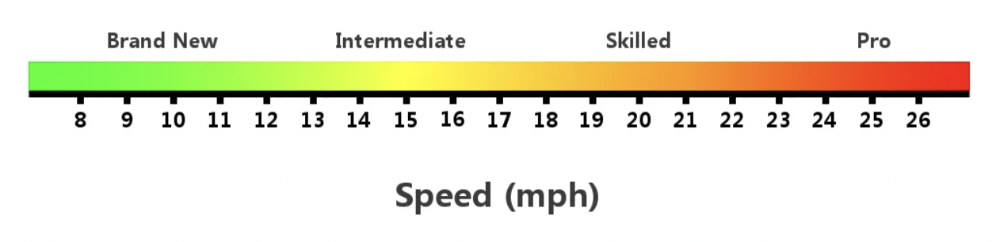
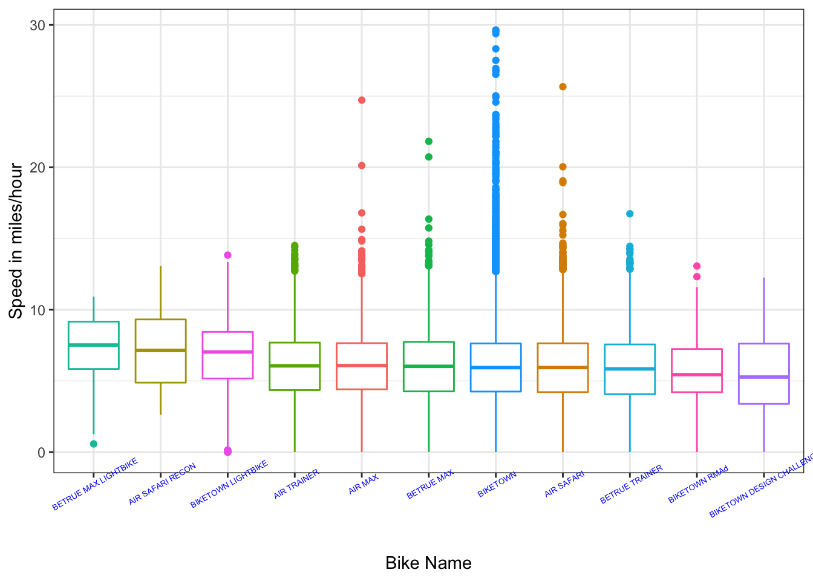
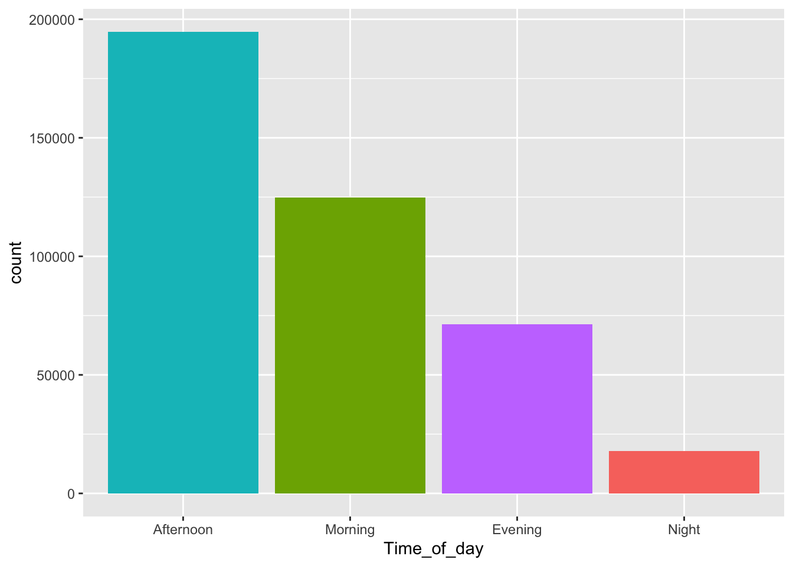
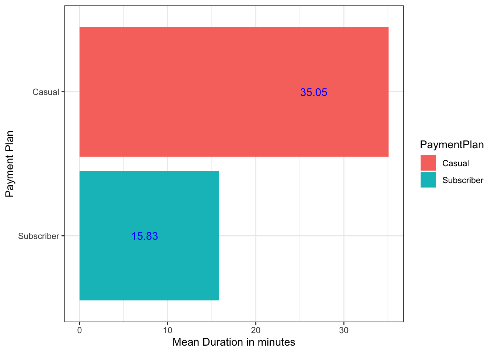

Introduction and Motivation
- Biketown is a bike share organisation that allows users to use their bikes. It also records data of how where and when these bikes were ridden.
- Using this data to inform users of general trends will hopefully motivate them to ride bikes more often. Riding bikes has a two fold advantage: firstly people stay fit when they ride bike and secondly use of bikes will most probably reduce car usage and thus protect the environment.
In my blog, I have used the data about riders time, duration, location etc. to find out general trends that people can see and understand easily and use this to choose how they wish to ride.
Data Description
The data used for this analysis is available to the public here.
It contains information about bike rentals.
?(caption)
In ?@tbl-variables, all the important variables of the data is mentioned along with the variable type and description.
Analysis
Comparison of Speed.
The average speed of an average rider is 15 miles per hour. Nevertheless, speed varies on various factors such as inclination of the road, weather conditions, the type of bike, etc.


In the above Figure 1 we can see average speed of different bikes. The above figure is obtained by only using speed below 30 miles per hour to see speeds in the normal limits. We can observe that Betrue Max Lightbike has the highest median speed.
Bikes that have traveled over the speed of 30 miles per hour are AIR SAFARI, BIKETOWN, AIR TRAINER
Top 5 bikes according to their average speed
Using all the data we have, the bike with the highest average speed is BETRUE MAX LIGHTBIKE.
| bikeName | avg_speed |
|---|---|
| BETRUE MAX LIGHTBIKE | 7.194210 |
| AIR SAFARI RECON | 7.166667 |
| BIKETOWN LIGHTBIKE | 6.731211 |
| BIKETOWN | 6.581878 |
| AIR TRAINER | 6.033198 |
Time of Day
Different people prefer different times of the day to ride bikes but if one is aware of the most common and least common times they can choose the time they wish to ride. If a person is hoping to find rider buddies along their ride they can choose the most common times and if a person is hoping to easily find a bike they can choose the least common time. The optimum temperature is warm, not hot or cold.

According to the data we have, shown in Figure 2 surprisingly, afternoon is the most common time that riders choose even though it is commonly hot and sunny!
Payment Plan
One would normally expect that riders who are subscribers will have a higher mean duration of riding bikes but the data we have suggests otherwise. As seen in Figure 3 Casual riders have a higher mean duration.

Location Analysis
In this section, let us see the most common location that riders choose to ride from.
Conclusion
From the above analysis, we get a lot of information about some common habits and characteristics of riders. We know which bikes have normally been driven at higher speed, most riders prefer to ride in afternoon and that casual riders have higher mean duration. The most common locations that riders start from is also shown.
References
Software: RStudio Team (2020). RStudio: Integrated Development for R. RStudio, PBC, Boston, MA URL http://www.rstudio.com/.
Data: Lyft. Biketown(2022). https://biketownpdx.com/system-data
Tyler Whitehouse. Road Bike Basics. (2022). https://roadbikebasics.com/average-speed-on-road-bike/